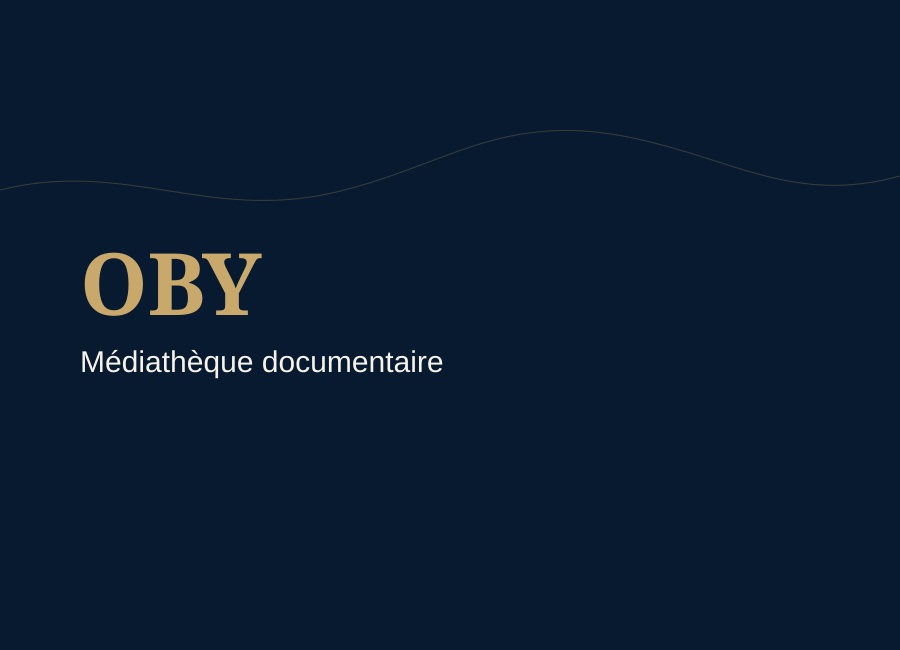

Portraits
Portraits officiels et visuels d'identité.

Une médiathèque sélective consacrée aux visuels liés au parcours, aux événements, aux terrains et aux supports documentaires.
La Médiathèque rassemble des visuels vérifiés et publiables liés au parcours, aux événements, aux terrains, aux ouvrages et aux supports documentaires.
Portraits officiels et visuels d'identité.

Conférences, colloques, ateliers et rencontres professionnelles.

Images de terrain, littoral, territoires et espaces d'observation.

Visuels liés aux lectures, corpus et ressources de travail.
Supports de présentation, affiches ou documents publics validés.
Vidéos, interviews et médias publiables lorsque les droits et sources sont vérifiés.